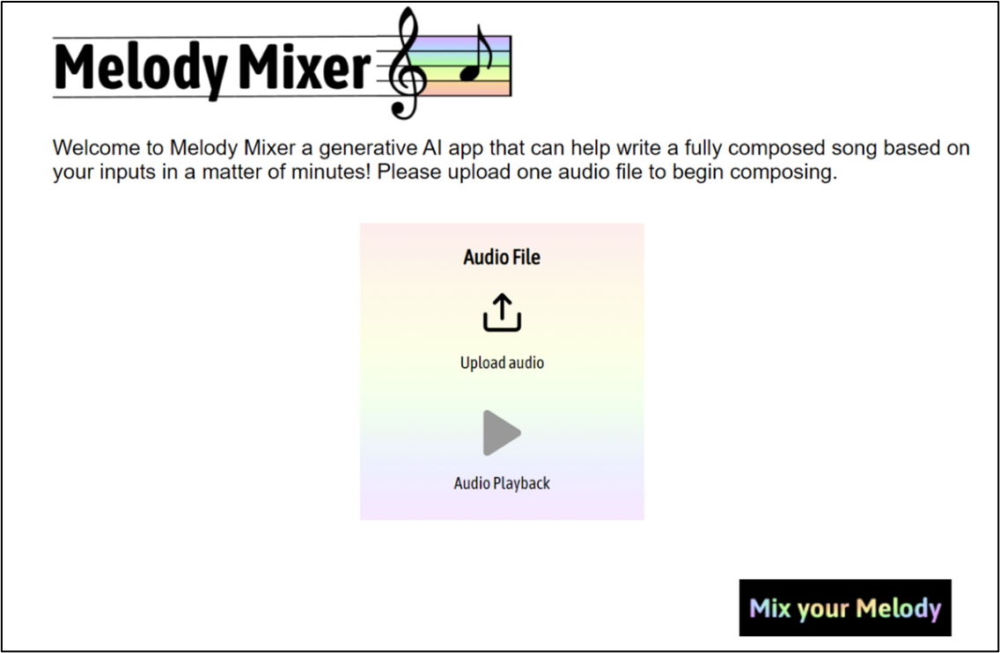
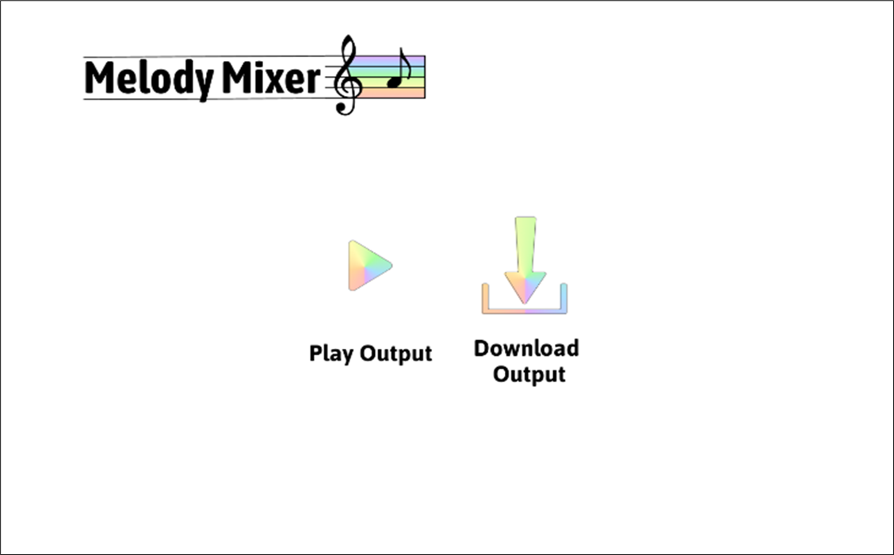

Problem Definition
The song creation process is inherently complex, often necessitating the collaboration of multiple musicians and technicians. This complexity can make the process exclusive and inefficient, creating barriers for individuals without access to specialized skills or equipment. The proposed solution seeks to simplify this process by developing a neural network-based generative AI model. This AI will process guitar inputs from the user to generate cohesive musical compositions, outputting a five-track MIDI file that includes bass, drums, guitar, piano, and strings. The model will be trained on multiple musical datasets with multi-track piano rolls, allowing it to generate melodies and rhythms influenced by user input. The scope of the project prioritizes the model's core functionality and its ability to produce unique outputs based on instrumental input.
My Role
- Research
- GUI design
- Frontend integration to neural net
- GUI development
- User Evaluation
Tools Used

Figma

Visual Studio
Python
CSS
HTML
Javascript
Project Goals
The project's primary goal is to make music creation more accessible and efficient for a broad audience. By automating the generation of musical compositions, the AI model aims to lower the barriers to entry into the music industry, enabling even novice users to create complex musical pieces. The project seeks to streamline the music creation process and foster innovation by providing users with unique compositions that reflect their input.
Design
The design of Melody Mixer features an interactive Graphical User Interface (GUI) paired with a Generative Adversarial Network (GAN) to generate music based on user-provided chords and melody. Users input an eight-bar guitar melody as a MIDI file, which the system processes using a pre-trained generator to extract features like tempo, style, beat resolution, and pitch. The GUI does not include the format of the input.
- Generative AI responsible for music generation
Backend Component
- An intuitive user friendly interface
Frontend Component
User Interface and Experience
The frontend of the application was initially sketched as a low-fidelity prototype using the drawing software Procreate to determine the best layout. Subsequently, a high-fidelity prototype was created using the design software Figma, detailing the user interface, aesthetics, and navigational aspects without any code. Feedback from group members and potential users was gathered to identify unclear elements and improve the design before coding. Key usability and design principles such as consistency, optimizing operation, ease of use, and satisfaction were prioritized. These principles influenced button placement, the inclusion of instructions, and a stylized rainbow aesthetic. below are the two pages of the application coded using HTML, CSS, and Javascript.
 Final Product Testing
- Melody Mixer was tested with various musical inputs to ensure scalability.
- Ten different guitar inputs were used, and each output was assessed for quality.
- The outputs received an average score of 4.3 for rhythmic, melodic, and harmonic originality.
Durability Testing
- A survey was created to evaluate demographics, quality of generated output, creativity and originality, and user experience.
- Testing was conducted methodically using the same headphones and pre-recorded audio input to ensure fairness.
- Users navigated the Melody Mixer interface and generated outputs, which were then evaluated through the survey.
User Testing
Testing Results
- Quality of generated output received an average score of 4, indicating positive user sentiment.
- Creativity and originality scored an average of 4.2, with all users stating they had not heard a similar song before.
- Users recommended improvements in audio balance, bass reduction, and a genre condition.
- User interface intuitiveness scored an average of 4.2, with suggestions for a loading feature and visual prompts during processing.
Check it out!
Below are QR codes of the input and output of the application. Scan them with your phone and give it a listen.
System input
System output